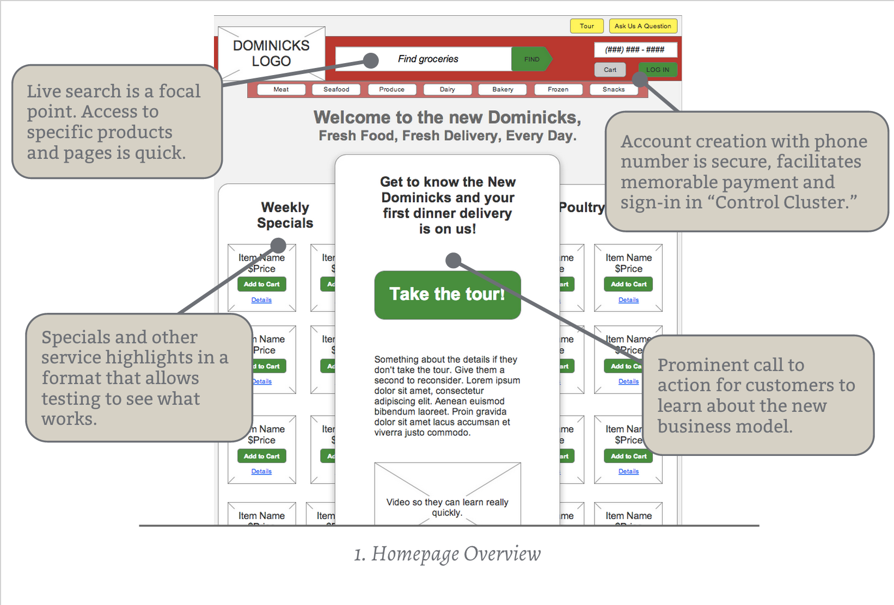

Dominicks Refresh
As a struggling grocery chain, Dominicks want to reimagine the grocery business, so that we can lower the cost-overhead for our stores while increasing our product throughput.
Problem Definition
How can we build a digital tool to enable more effective grocery shopping and convenient delivery options while encouraging customers to buy our products and live healthier lives? These requirements were part of the design brief:
- Site should feature easy to use navigation that covers the primary areas
- Users should be able to review weekly specials from the homepage
- Site should provide the ability for frequent shoppers to log in to the site
- User should be able to browse for grocery items as well as search for them directly
- Site should feature some help/support mechanism
Audience
The target customer for this experience would be urban professionals who do not have time to go grocery shopping regularly and who want to eat food prepared at home.
Team / Role
I performed rudimentary data collection, creative service design concepting, and interaction design on this project.
Constraints
Not having access to customer data and demographic information made this difficult. The technical feasibility is also questionable.
Design Process
My first step was to consider the context of urban professionals, in this instance considering the demographics of my coworkers. Some themes I identified were:
- Most commuted on the CTA and a few took Metra.
- Most either shopped after work a few nights a week or ate out.
- All had considered using Peapod or a similar service.
With this knowledge in hand I felt I knew how to position Dominicks in an innovative way.

The Customer Experience
Last mile delivery is a big differentiator and a sticky subject, but I feel the pareto principle is a good guide.
If Dominicks can do 20% of the last mile delivery effort, they should see 80% of the return true last mile would deliver (pun intended).
There are a few more benefits to this “20% last mile” approach:
- With pick-and-pack volume throughput would increase without the need for expensive retail space.
- Tiered delivery and incentives build low-stakes brand familiarity.
The tiered delivery allows Dominicks to improve customer convenience, service, online presence, and on-ground presence. The three primary methods of grocery delivery include:
- In-store pickup at all Dominicks locations is free.
- “Food-truck”-style pickup at high traffic locations such as El or Metra stops for a moderate charge (TBD).
- Home delivery for a premium charge (TBD).
This focus on convenience and service will lead to increasing customer loyalty and revenue, and “Food-truck” pickup is great advertising.
Initial Engagement
Beyond offering physical convenience, Dominicks will offer fresh hand-picked meal ingredient packages, which include recipes and are cooked at home by customers. These meals can be picked up from the food trucks using a smart-phone app as an authentication method, or phone numbers which are also memorable and secure.
For the interaction design portion of the exercise, I created pages to simulate the customer-facing experience. The first stop is a tour to engage customers with the new face of Dominicks and highlight new product offerings.
{kind=link}
{kind=link}
During the tour, customers are encouraged to engage with the new face of Dominicks and try picking up a free meal just for signing up. This rewards customers for engaging with Dominicks and helps them painlessly understand the new process.
Convenience and Health
For customer service, the focus is on providing easy answers right away, allowing customers to search for answers if they’d like, and as a fall-back, having customer service representatives call busy customers. This means no waiting on hold and the concierge aspect of the new experience stays intact.
{kind=link}
{kind=link}
It’s important to show customers what they would like to see when they are exploring new options, so providing a few ways to filter and find meals clearly shows them where they are and what to do next.
Searching, Finding, and Purchasing
Grocery pages have large images of items with clear labels to aid findability, while item details provide everything customers need to know about the product. When adding products to the cart, a clear affordance is shown with a simple way for the customer to remove any mistakenly-added items.
{kind=link}
{kind=link}
{kind=link}
The cart and settings views are simple, providing clear hierarchy and grouping to keep things simple. No extra details are shown, but updating any variable in the cart or in the settings is just a click or two away.
{kind=link}
{kind=link}
Retrospective
I feel this project was a great test of my skills and covered the breadth of what I am interested in, from research to service design to interaction design.
If I had more time to work on this project I would definitely do more research into the feasibility of food-truck style delivery and would ideate more when creating the wireframes and interaction flows.